Vancouver, BC (w130n40)
Downtown Vancouver, BC at dusk, looking from the south. Kitsilano is in the foreground and Stanley Park is on the left. Take off from from Vancouver International Airport (CYVR).

Grand Canyon (w120n30)
The Colorado River at the bottom of the Grand Canyon. Take off from Grand Canyon National Park Airport (KGCN).
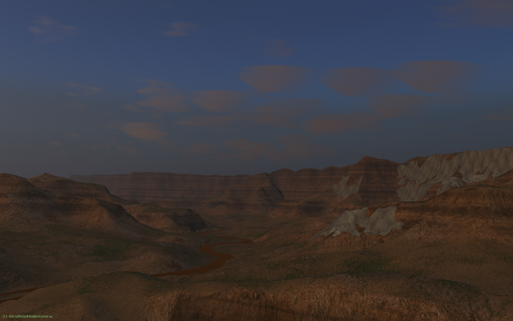Ipanema, Rio de Janiero, Brazil (w050s30)
The lights and beach of Ipanema at night. Take off from Porto Alegre Airport (SBPA).
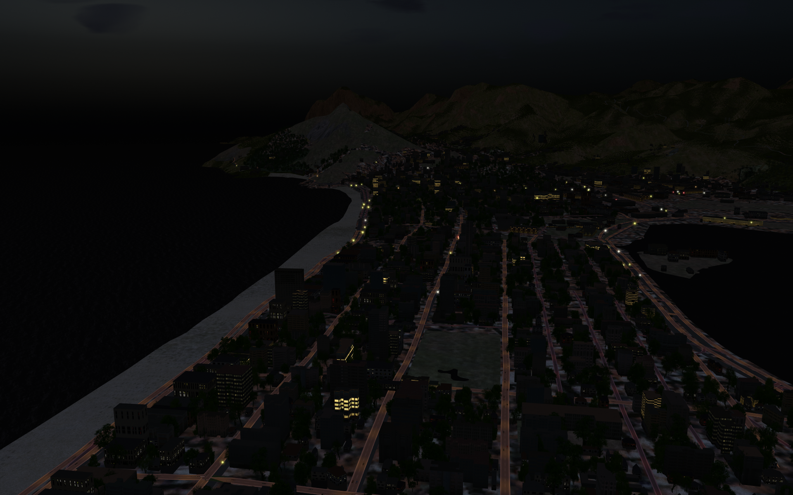Godrich, ON (w090n40)
Flying towards a frozen-over Georgian Bay on Lake Huron. Take off from from Godrich Airport (CYGD).

Panama Canal, Panama (w080n00)
Container ship steaming north torwards the Gatún Locks and the Atlantic Ocean in the artificial Lago Gatún south of Colón, Panama. Take off from Enrique Adolfo Jimenez Airport (MPEJ).
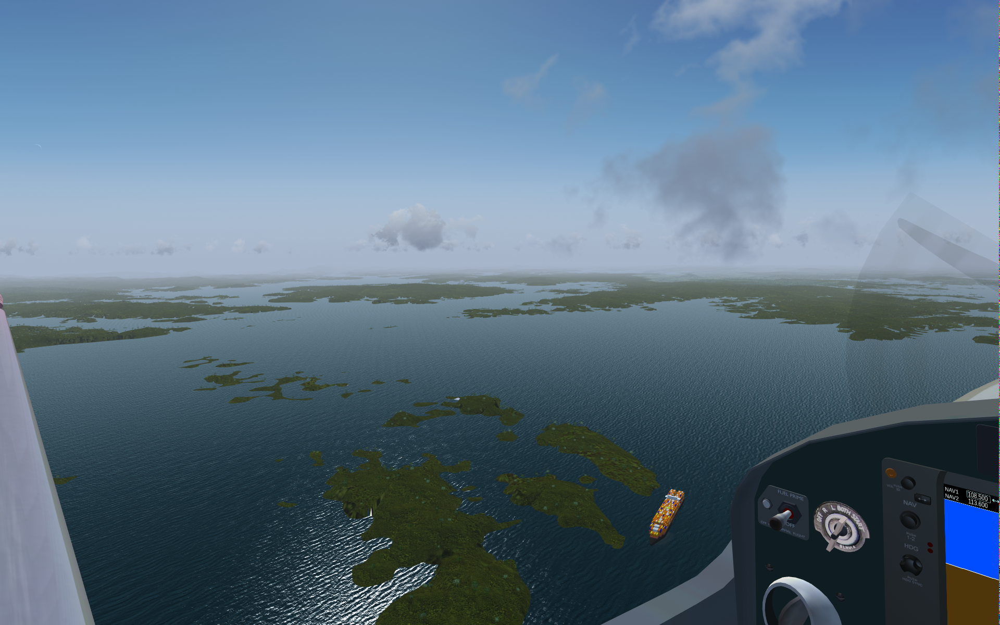Flagstaff, AZ (w120n30)
On descent for Flagstaff Pulliam International Airport (KFLG), elevation 7,014 ft.
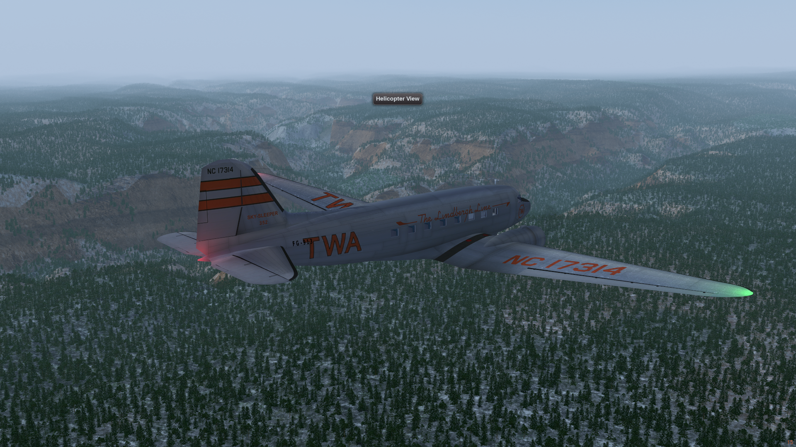Santiago, Chile (w080s40)
Santiago city centre with Parque O'Higgins and the Movistar Arena in the foreground and the Cerro San Cristóbal in the background. Take off from El Bosque Airport (SCBQ).
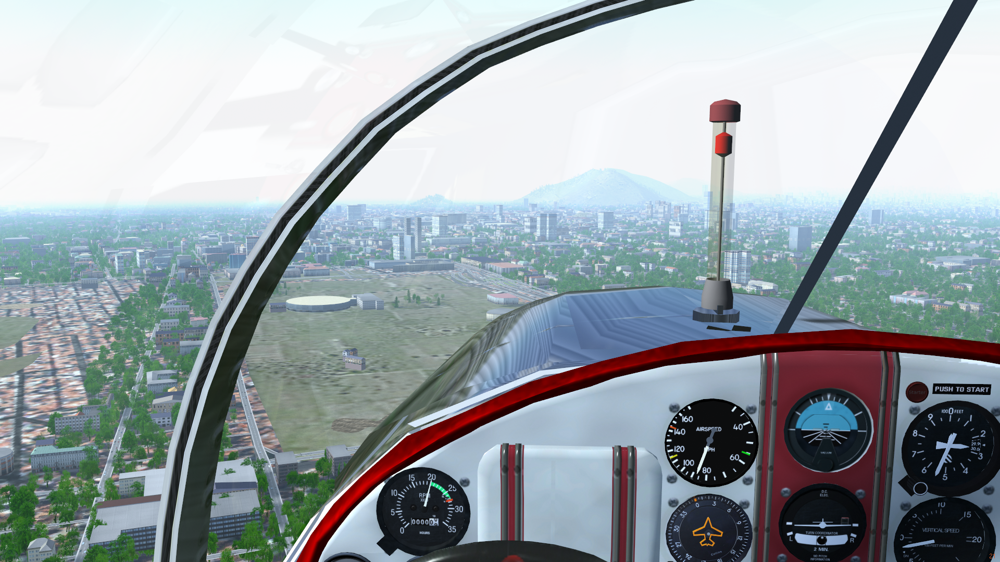Miami Beach, FL (w090n20)
Miami Beach on a hazy afternoon. Take off from from Miami International Airport (KMIA).

Jasper, AB (w120n50)
Rocky Mountains near Jasper, AB. Take off from from Jasper Airport (CYJA).

Amazon rain forest, Brazil (w70s10)
The mouth of the Tarumã Açu River at the Rio Negro, just before the Rio Negro joins with the Amazon at Manaus. Take off from Eduardo Gomes International Airport (SBEG).
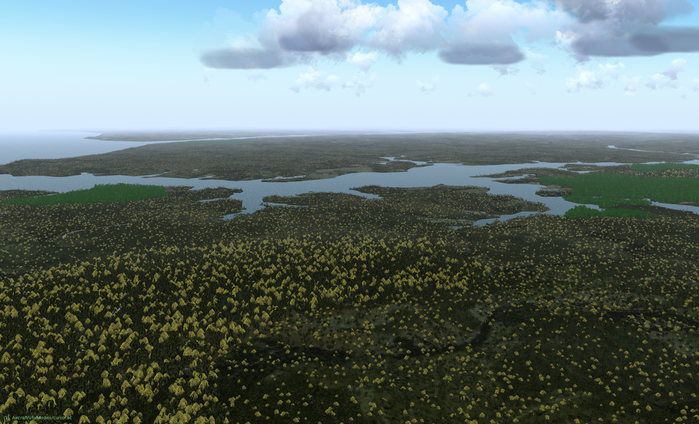Columbia River, USA (w130n40)
Along the Columbia River, towards Portland OR on the left and Vancouver WA on the right. Take off from Portland Troutdale Airport (KTTD).
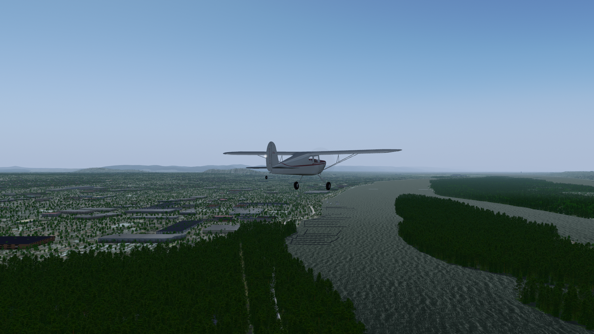Bolans, Antigua (w070n10)
Caribbean flying in Antigua and Barbuda. Take off from VC Bird International Airport (TAPA).
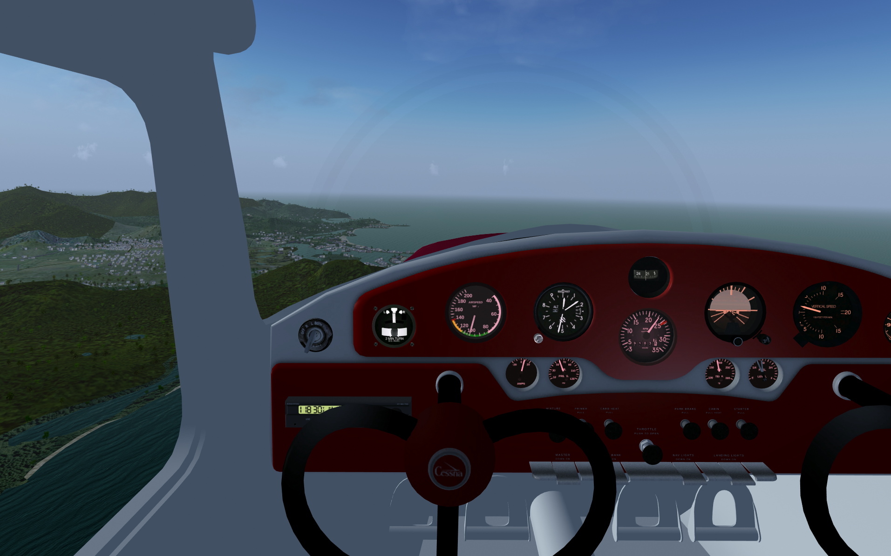Falkland Islands/Malvinas (w060s60)
Flying on East Falkland between Stanley and Salvador on a rare clear day. The island is full of bays and inlets. Take off from Port Stanley Airport.
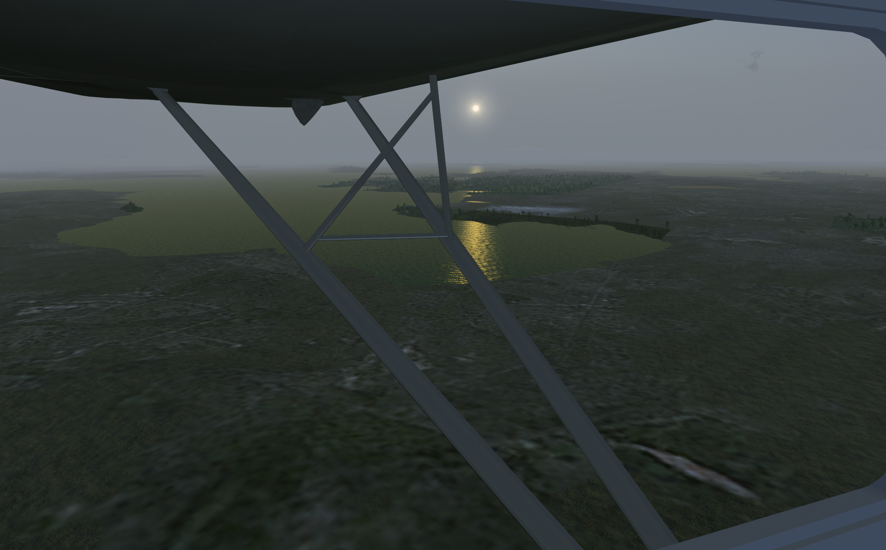Gateway Arch, St. Louis (w100n30)
We need proper bridge models here, but the famous Gateway Arch in St Louis, MO is easy to find. Take off from Spirit of St Louis Airport (KSUS).

Argentinian Pampas (w070s40)
Flying south along the Paraná River through the Pampas. When landscape is relatively flat and monotonous, water detail can help bring the scenery alive. Take off from Paraná's General Urquiza Airport (SAAP).
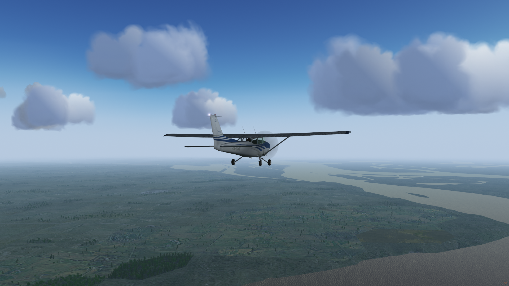Gander, NL (w060n40)
Gander on a winter's night. On 11 September 2001, 75 trans-Atlantic flights were diverted here, as related in the Broadway musical Come From Away. Take off from Gander International Airport (CYQX).
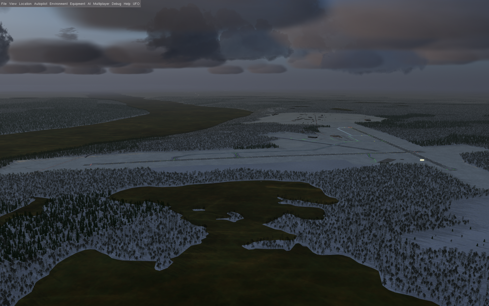La Paz, Bolivia (w070s20)
High in the Andews after departure from one of the world's highest-elevation airports with scheduled airline service (13,325 ft / 4,062 m MSL). If you're flying a piston plane, you'll have to lean the mixture quite a bit just to get the engine started, and will have to be very patient getting off the ground. Take off from El Alto International Airport (SLLP).
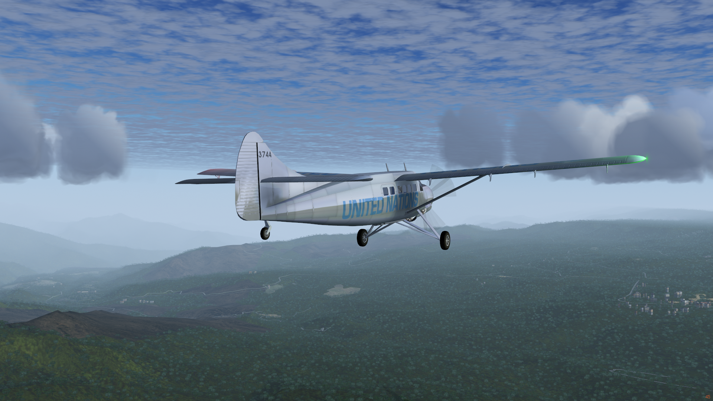Ottawa, ON (w080n40)
Canada's National Capital Region, Ottawa-Gatineau, from 3,000 ft above the Canadian Aviation Museum at Rockcliffe Airport. The latest scenery build (starting 2023-11-16) includes more variety in urban landcover. Take off from Ottawa/Rockcliffe Airport (CYRO).
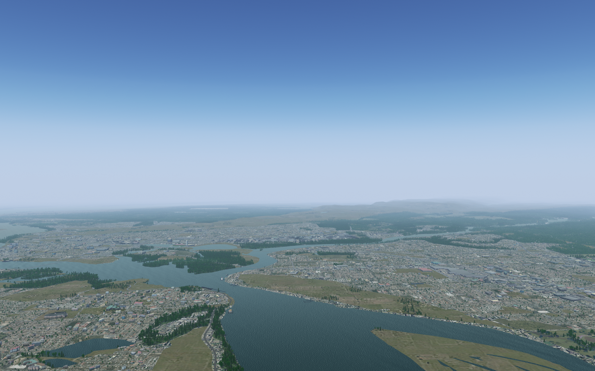Faroe Islands (w010n60)
These are definitely not in North America, but I couldn't resist adding them to go with their North Atlantic partners, Greenland (all in North America) and Iceland (partly in North America). Enjoy some rugged, beautiful flying. Take off from Vágar Airport (EKVG).
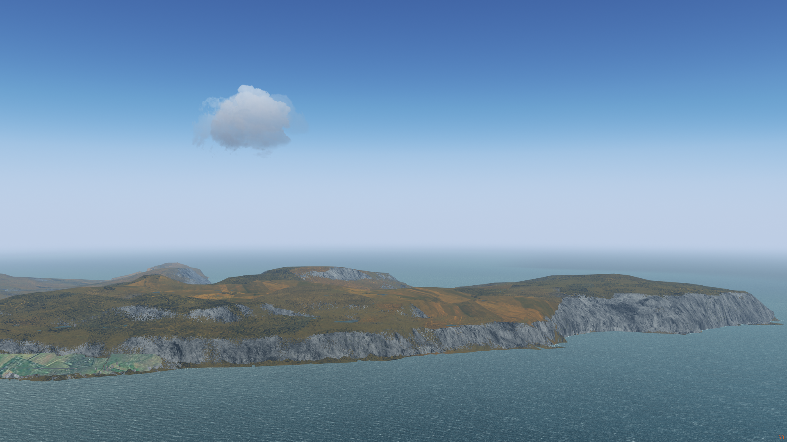Mount Katahdin, Maine (w070n40)
Katahdin ("Great Mountain" to the indigenous Penobscot people) at dawn. While technically not correct, it's common folklore that the peak of Katahdin is the first bit of the U.S. mainland to see the sun every morning. Take off from Millinocket Municipal Airport (KMLT).
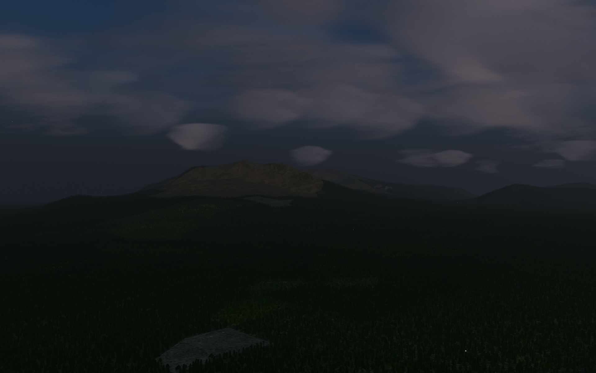Fjord in Umingmak Nuna (w090n80)
A fjord in Umingmak Nuna (ᐅᒥᖕᒪᒃ ᓄᓇ, Ellesmere Island) in Canada's High Arctic. There is no nearby airport. This screenshow was captured at 82N, 85W.
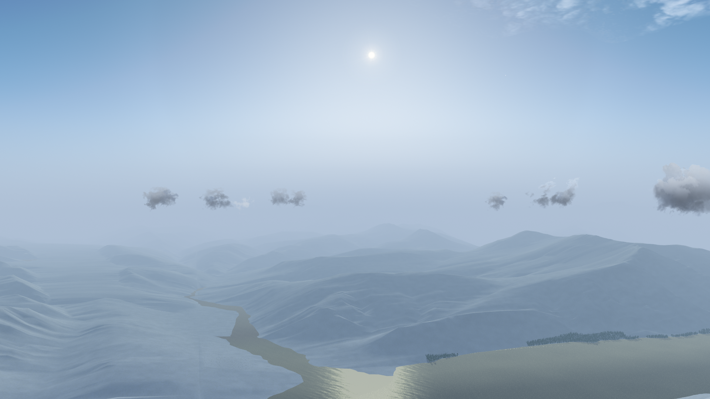Alaskan wilderness (w160n50)
Looking south over Seldovia Bay, off Cook Inlet. Take off from Seldovia Airport (PASO).
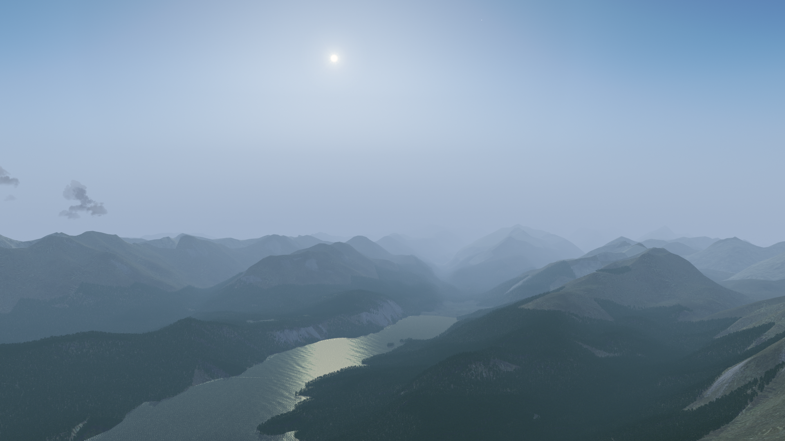Montego Bay, Jamaica (w080n10)
Flying along the Jamaican coastline at Montego Bay. Note the big piers in the town, and the islands in the bay. Take off from Sangster International Airport (MKJS).

Wetlands outside Havre-Saint-Pierre (w070n50)
Hundreds/thousands of small ponds in the wetlands surrounding Havre-Saint-Pierre, Quebec on the north shore of the St. Lawrence River. The ponds show a strong point of vector-based scenery, the ability to reproduce small scenery features sharply when the viewer is close to the ground. Take off from Havre-Saint-Pierre Airport (CYGV).
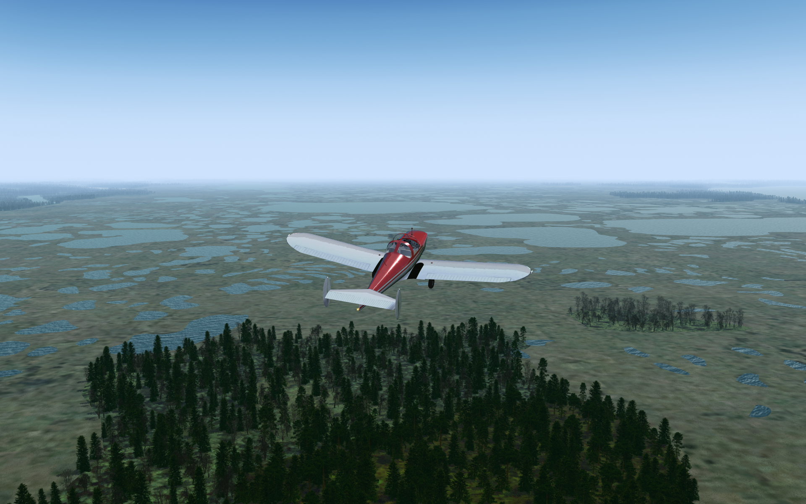Kluane National Park and Reserve, Yukon (w140n60)
Mountain and glacier in Kluane National Park, Yukon, Canada, viewed across a frozen Kluane Lake in January just after departing Silver City Airport (CFQ5) on the Alaska Highway.
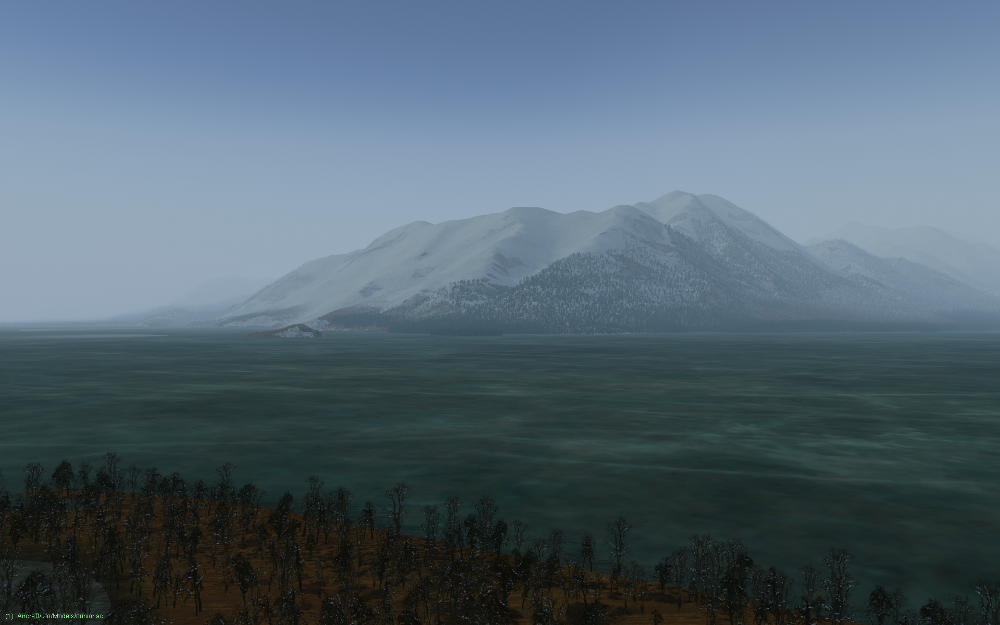